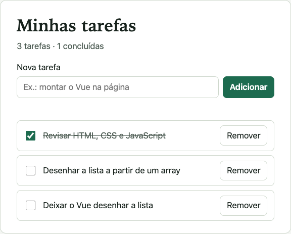

Desafio: a mesma Todo List, sem nenhum render()
Hoje o Vue entra numa parte da página da etapa 06 — sem npm, sem build — e passa a desenhar a lista.
| Critério | Evidência |
|---|---|
| Classificar ferramentas pelo papel | Vite, Nuxt, Tailwind e Vue cada um na sua categoria |
Montar o Vue em #app | Lista desenhada pelo template, não por createElement |
| Ação nova só mudando o estado | “Concluir todas” atualiza lista e resumo |
render(), a lista ainda atualiza? O que
precisaria existir para que sim?
Ferramentas por papel — e o que “Vue é progressivo” quer dizer
| Papel | Exemplos | O que faz |
|---|---|---|
| Framework de UI | Vue, Angular, Svelte; React (se define como biblioteca) | Componentes, template, reatividade |
| Meta-framework | Nuxt (Vue), Next.js (React) | Rotas por arquivo, renderização no servidor, convenções |
| Componentes / CSS | Vuetify, Bootstrap, Tailwind CSS | Aparência e peças prontas; não cuidam do estado |
| Build | Vite, webpack | Servidor de desenvolvimento e pacote de produção |
Progressivo: dá para começar renderizando só uma parte de uma página existente (hoje) e crescer até uma aplicação com build, componentes e rotas.
“Minha visão para o Vue é dar a qualquer pessoa uma barreira de entrada baixa, uma boa base e espaço para crescer.”
— Evan You, criador do Vue (GitHub ReadME, tradução livre)
Vue numa parte da página, em três passos
<script src="vendor/vue.global.js"></script> <!-- cria a variável global Vue -->
<script src="app.js"></script> <!-- nosso código, que usa Vue -->const { createApp, ref } = Vue
createApp({
setup() {
const tarefas = ref([ … ]) // estado REATIVO
function remover(id) {
tarefas.value = tarefas.value.filter((t) => t.id !== id)
} // sem render()
return { tarefas, remover } // o que o template usa
},
}).mount('#app') // só o elemento #app<p class="resumo">{{ tarefas.length }} tarefas · {{ contarConcluidas() }} concluídas</p>
<li v-for="tarefa in tarefas" :key="tarefa.id" :class="{ concluida: tarefa.concluida }">
… {{ tarefa.titulo }} …
<button @click="remover(tarefa.id)">Remover</button>
</li>
Tela real: idêntica à etapa 06 — o que mudou foi quem desenha.
Abra etapas/07-vue-na-pagina/index.html direto do disco: o build global funciona via file://.
ObserveO <h1> está fora de #app. O Vue consegue atualizá-lo?
Prática: “Concluir todas” mudando só o estado
- Tarefa
- Função
concluirTodasnosetup, devolvida noreturn, e um botão com@click="concluirTodas". - Compare
- Com a sua solução da etapa 06: o que você não precisou escrever?
- Evidência
- Lista e resumo atualizados sem chamada de redesenho.
Dica
O botão precisa estar dentro de <section id="app"> para o @click funcionar.
Mostrar solução (após a tentativa)
function concluirTodas() {
tarefas.value = tarefas.value.map((t) => ({ ...t, concluida: true }))
}
return { …, concluirTodas }| Etapa 06 (JS puro) | Etapa 07 (Vue) |
|---|---|
querySelector para cada elemento | nada: o template referencia o estado |
createElement, textContent | v-for e {{ }} |
addEventListener | @click, @change, @submit.prevent |
render() após cada ação | nada: o Vue percebe a mudança |
Imperativo × declarativo: quem atualiza a tela agora
function remover(id) {
tarefas = tarefas.filter((t) => t.id !== id)
render() // recria a lista e o resumo
}function remover(id) {
tarefas.value = tarefas.value.filter((t) => t.id !== id)
}
// template: v-for="tarefa in tarefas" e {{ tarefas.length }}Modelo: o template é uma descrição da tela em função do estado. Quando o estado muda, o Vue compara o antes e o depois e altera só o necessário.
Evidência: o foco fica
Marque uma caixa com Tab e Espaço. Na 06 o foco vai para o <body>; na 07 continua na caixa — o Vue atualizou o elemento existente.
Limite: template escrito no HTML é lido pelo navegador antes do Vue (por isso v-cloak) e nomes com maiúsculas viram minúsculas. Arquivos .vue + build resolvem — etapa 08.
Investigação: um nome errado no template
[Vue warn]: Property "contarConcluida" was accessed during
render but is not defined on instance.
at <App>
[Vue warn]: Unhandled error during execution of render function
at <App>{{ contarConcluidas() }} trocado por {{ contarConcluida() }} · Vue 3.5.44 (build de desenvolvimento) · arquivo- Provoque: troque o nome no
index.htmle recarregue. - Leia a primeira mensagem: qual propriedade? Em que componente?
- Procure o nome no
returndosetup.
Dica
“accessed during render but is not defined” = o template usou um nome que o setup não devolveu.
Mostrar solução (após a tentativa)
O setup devolve contarConcluidas (com “s”). Corrija o template. O mesmo aviso aparece quando se esquece de pôr uma função nova no return.
Pesquisar: os 13 conceitos da Aula 3 e onde cada um é estudado
| Conceito (Aula 3) | Etapa | Página oficial |
|---|---|---|
| Template syntax · Reatividade | 09 | Template Syntax · Reactivity Fundamentals |
| Diretivas | 10, 11 | List · Conditional · Event Handling |
| Instância e ciclo de vida | 08, 12 | Creating an Application · Lifecycle |
| Computed e watchers | 11, 12 | Computed Properties · Watchers |
| Formulários e validação | 11 | Form Input Bindings |
| Componentes, props, eventos, slots | 13, 14 | Components In-Depth |
| Roteamento | 15–17 | Vue Router |
| Comunicação com APIs | 18–20 | Axios · json-server |
| Gerenciamento de estado | 21–23 | Pinia |
| Build e deploy · Performance | Módulo 2 | Vite · Tooling |
Classifique pelo papel (framework de UI, meta-framework, componentes/CSS, build): [Vite, Nuxt, Tailwind CSS, Vue, Vuetify, Next.js]. Para cada um, cite o endereço do site oficial onde ele se descreve. Não ordene por popularidade.
Verificação sem IA
- 1
- Vite, Nuxt e Tailwind: qual é o papel de cada um?
- 2
- O que
.mount('#app')decide? - 3
- Por que o defeito de sincronia da etapa 06 não acontece aqui?